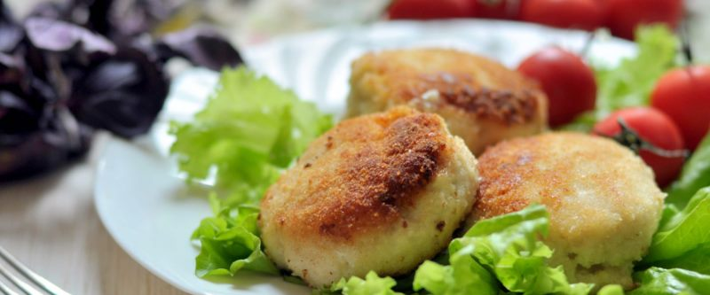

Рыбные котлеты

0,5 кг. филе сайды пропустить через мясорубку вместе с 1 луковицей, добавить 35 гр. манки, 1 яйцо, 1 ч.л. соли и специи для рыбы, все смешать до однородной массы. Мокрыми руками и сформировать котлетки или фрикадельки, готовить на сковороде на самом медленном огне, под крышкой до еле румяной корочки.